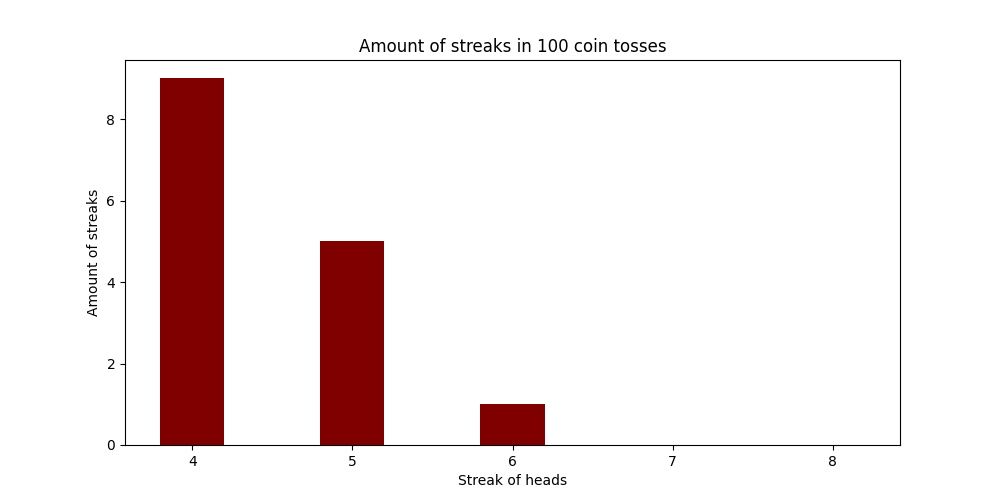

- I heard from somewhere that when you flip a coin a lot of times, it is very likely to get streaks of 6 or 7 heads in a row.
And people likely underestimate how often that happens, I wanted to run a simulation to see how true that was
- I built a script that generated this graph

- So there are some times when there are 6 streaks in 100 coin tosses. Since there are so many coin tosses, it is more likely. How much likely?>
Not sure, but all I can say is that I shouldn't
necessarily bank on an unlikely event not happening if I wait long enough.
- In fact, if I flip the coin infinitely times, I will probably see huge
streaks right? I just don't know how much I have to flip a coin for a "rare event"
to happen. I mean a coin flipping heads 6 times is not that rare I guess